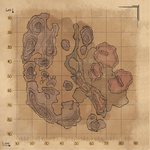
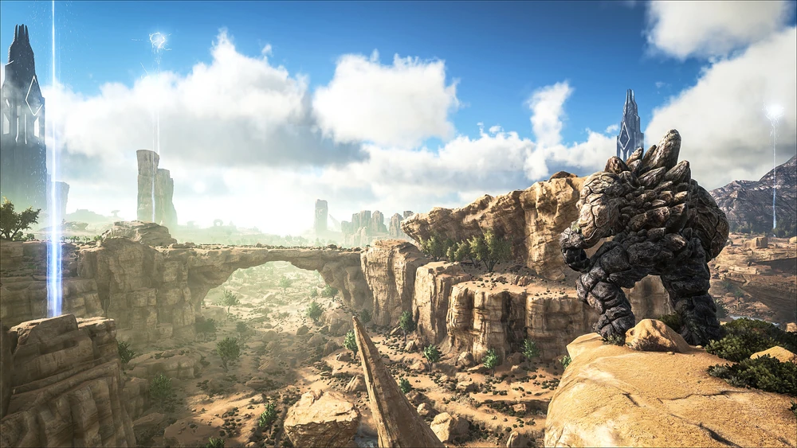
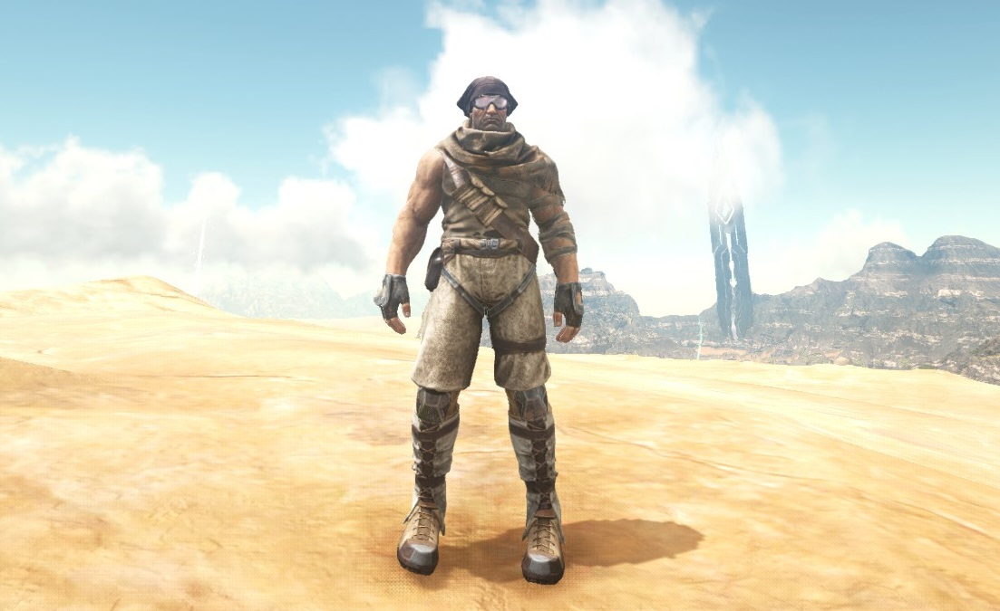
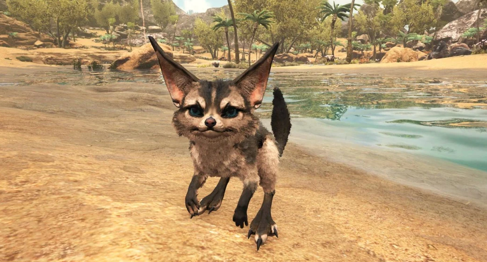
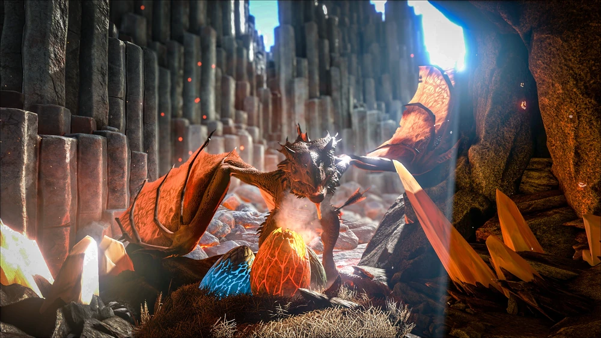
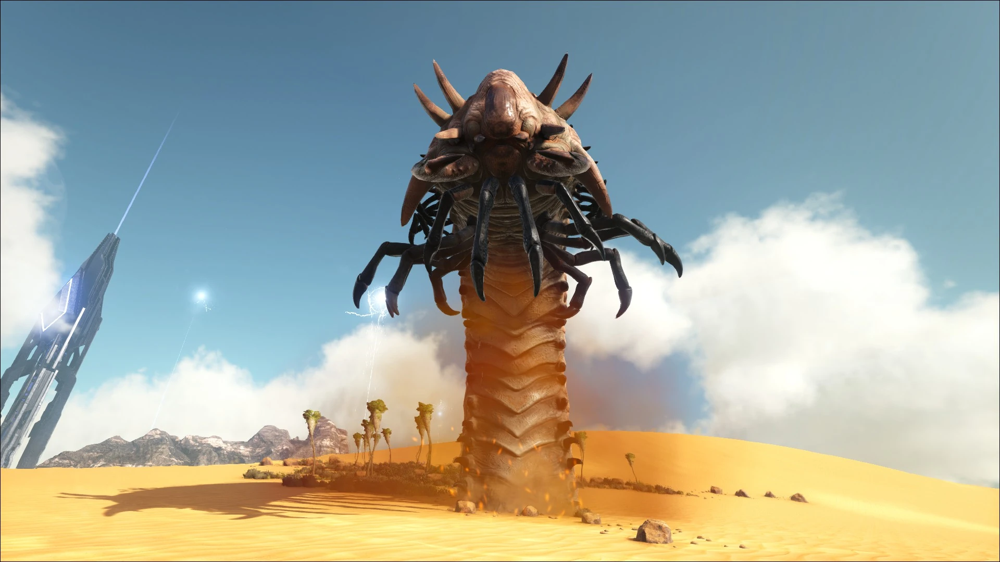
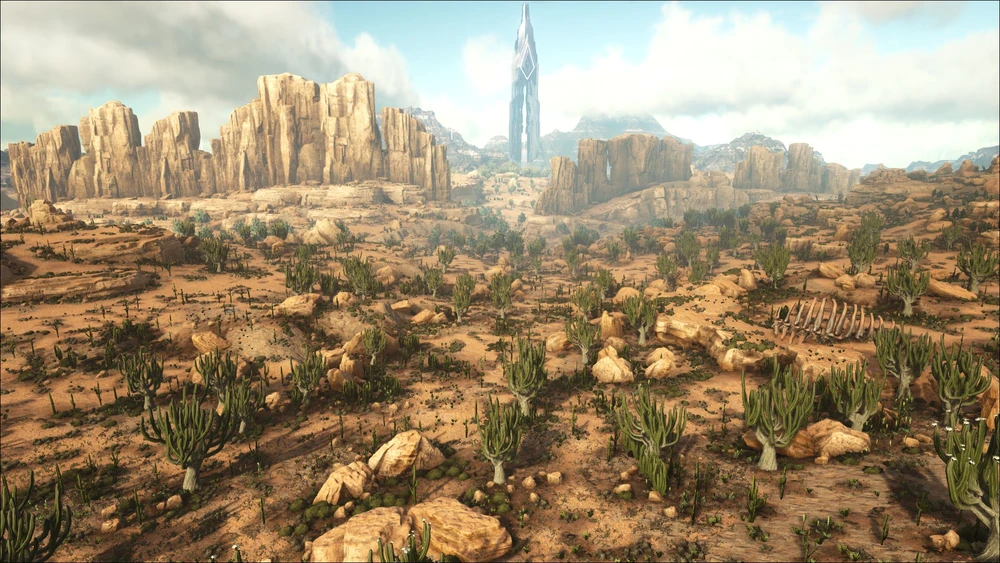
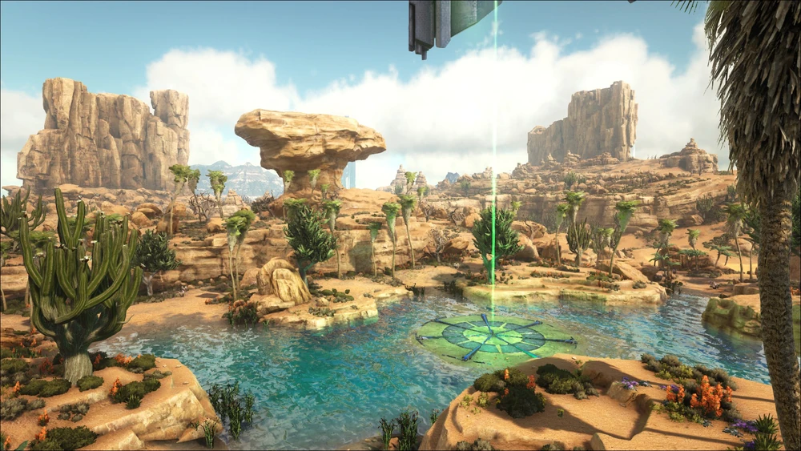
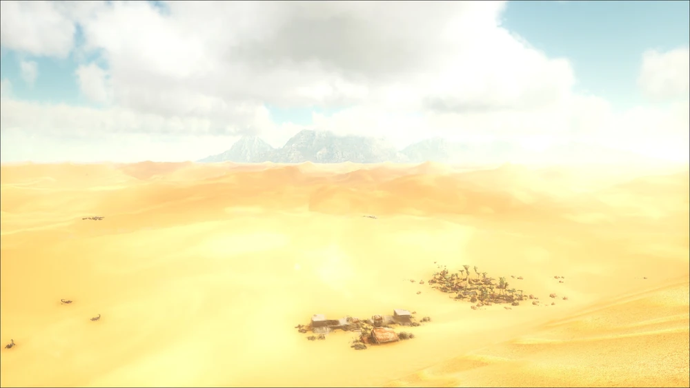
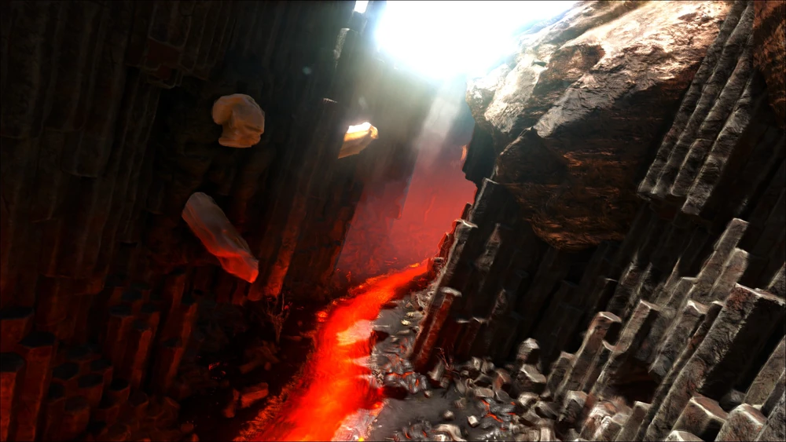

Scorched Earth
Scorched Earth je druga story mapa ARK-a koja je izašla 6. prosinca 2016. kao plaćeni DLC koji je tada koštao €9.99.
Scorched Earth je pustinjska mapa na kojoj preživljavanje ovisi o borbi protiv ekstremne vrućine, oluja i nedostatka vode.
Također donosi i nova stvorenja koja mogu otežati ili olakšati preživljavanje na ovoj mapi ako ih se pravilno upotrijebi.

Po čemu je ova mapa posebna:

Za razliku od prijašnje mape, ova je cijela prekrivena pustinjskim pijeskom umijesto otoka okruženog vodom.
Fokusirana je na snalaženje u ekstremnim vremenskim uvijetima, nepodnošljivim vrućinama i manjkom vode.
Vremenske neprilike su na ovoj mapi veliki problem, od piješčanih oluja, toplotnih udara pa čak i grmljavinska oluja te su potrebne posebne opreme da bi ih se preživilo.
Ova mapa donosi nove stvari i resurse kako bi se njezini ekstremni uvijeti preživili.
Od resursa, donosi pijesak, glinu, sulfur te kaktus te se sve to može iskoristiti kako bi se napravila nova oprema za preživljavanje.
Od te opreme imamo cijelo novo pustinjsko odijelo, novi set za gradnju i najbitnije od svega je bunar s obzirom na nedostatak vode.

Stvorenja koja se ovdje mogu naći:
Jerboa je slatko malo stvorenje koje se može naći bilo gdje na ovoj mapi.
Iako je malo i slabo te na prvu izgleda beskorisno, jedno je od najkorisnih životinja ove mape.
Jerboa može predvidjeti nadolazeće vremenske neprilike i upozoriti vas da se imate vremena pripremiti što može drastično olakšati preživljavanje.

Vywern je jedno od najjačih stvorenja ove mape i dolaze u 3 varijante, Fire, Poison i Lightning, svaki sa svojim mogućnostima.
Nalaze se u "Vywern trench-u" gdje se moraju ukrasti njihova jaja i odgajati bebu za sebe dok ne izraste kako bi ih pripitomili.
Sa svojim novim odraslim Vywernomnm, putovanje i preživljavanje ove mape je mnogo lakše.

Deathworm je najveće i najopasnije stvorenje ove mape.
Nalaze se u "Dunes-ima" i putuju ispot površine pijeska dok vas ne nađu i pokušaju ubiti.
Oni se ne mogu pripitomiti već koriste za loot koji se dobije dok su poraženi.

Biomi:
Badlands i Canyons su unutarnji dijelovi Scorched Earth-a. Ovdje se mogu naći svi glavni resursi, stvorenja i lokacije za bunare.
U canyons-u se može naći malo vode izvan bunara što može omogućiti lakše stvaranje farme i s toga su jako dobro mijesto za osnivanje baze.
U badlands-ima su sva mijesta za postavljanje oil pump-a, što je glavni izvor nafte na ovoj mapi.


Oasis se nalaze ispod tri obeliska ove mape, i poznata su po najvećoj količini vode, ali i najviše opasnih stvorenja.
Sa najvećom količinom vode i zelenila se stvaraju i najviše raznovrsnih životinja, od kojih mnoga mogu biti opasna. Najznačijnija opasna životinja je Kaprosuchus (pričam iz iskustva).
Iako je pre opasno za ostati ovdje, svakako je vrijedno svratiti za resurse, uz sigurnosne mjere naravno.
Dunes su najopasniji dio Scorched Eartha. Nalaze se uz vanjski dio mape i okružuju cijeli ostatak mape.
Poznata su po ekstremnim vrućinama i praznini te samom pustom pijesku. Ništa se ne nalazi ovdje od resursa i samo je par napuštenih građevina.
Ovim pustošima vladaju Deathwormi koji su glavni razlog zašto se ovdje dolazi, jer njihov loot je potreban za pobjedu ove mape.


Mountains su planinski dio Scorched Eartha, najznačajniji po velikoj količini metala i sulfura.
Ovdje se takošđer nalaze jedna od najjačih stvorenja ove mape koja se daju pripitomit, najznačajniji od njih je Rex.
Najpoznatije mjesto planina je Vywern trench koje je udubina u planini i gnijezdo Vywerna gdje se nalaze njihova jaja koja se mogu ukrasti i odgojiti za sebe.